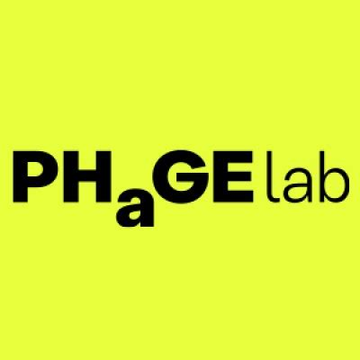
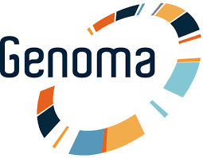

Codebreaker Biosciences
Active PositionBioinformatics Lead
Leading the development of novel algorithms and analytical methodologies for high-throughput microbiome data. Architecting end-to-end bioinformatics pipelines, relational and specialized databases, interactive reporting systems, and scalable AWS cloud computing infrastructures.

PhageLab
Director of Computational Biology and Data Science
Directed an interdisciplinary team of computational biologists and data scientists engineering machine learning algorithms for microbial genomic data. Responsible for strategic pipeline design, multi-source data integration to predict bacteriophage-bacteria interactions, and managing enterprise software tools and databases supporting large-scale genomics.
PhageLab
Head of Bioinformatics
Managed a multidisciplinary team of bioinformaticians, biochemists, and biotechnologists. Coordinated joint workflows with molecular biology wet-labs and supervised high-throughput genomic data pipelines with robust statistical controls, contributing to scientific publications and international patent filings.
Psomagen USA
Senior Bioinformatics Scientist
Instrumental in developing advanced bioinformatics pipelines for clinical and environmental microbiome analysis. Authored comprehensive data analytics reports and interactive visualizations for global clients, ensuring complex genomic data was actionable and rigorously verified.

Centro de Genómica y Bioinformática (Genoma Mayor)
Director of Bioinformatics
Constructed and automated multiple genomic analysis pipelines, optimized existing workflows for high data throughput and integrity, and led the development of dynamic scientific reporting dashboards using R tools (Shiny/Markdown).
uBiome
Director of Bioinformatics
Directed bioinformaticians and data scientists in developing production microbiome pipelines. Key architect in designing algorithms for clinical sequencing assays, collaborating across product and engineering to ensure data governance, computational scalability, and regulatory compliance.
uBiome
Algorithm Development Team Lead
Supervised algorithm design and execution for microbiome profiling. Partnered directly with wet-lab experimentalists to validate computational predictions and optimize assay accuracy.
Universidad del Desarrollo
Bioinformatics Researcher
Engineered computational pipelines for human genomic and clinical genetic studies in close partnership with medical physicians and clinical geneticists, developing software tools and databases for large-scale cohort studies.